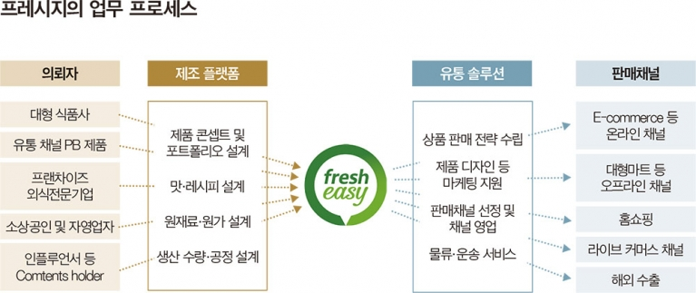
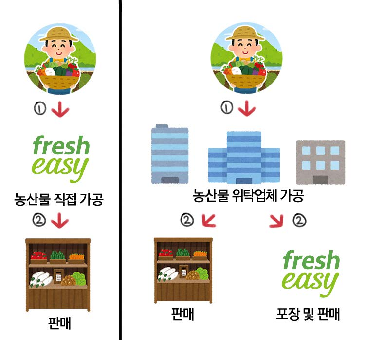
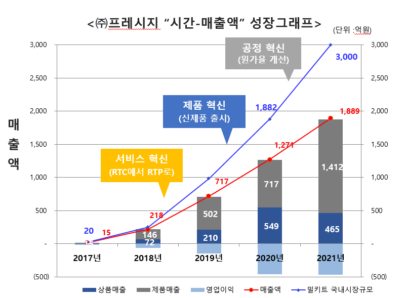
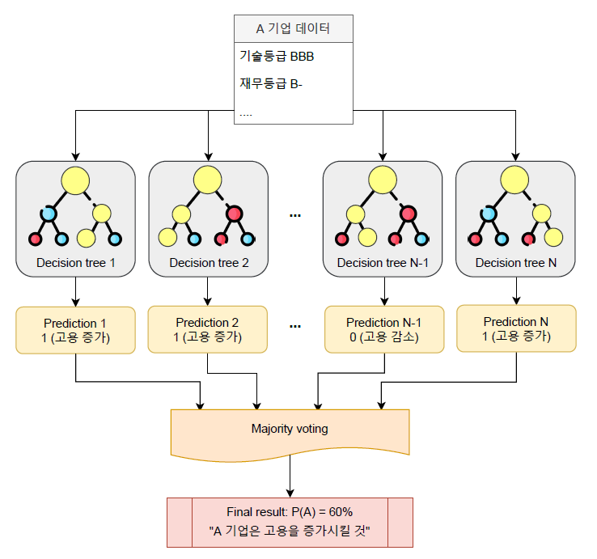

Of all the changes brought by COVID-19, the one the general public felt most keenly may be the change in how we eat. This study analyzes the core capabilities of Fresheasy, a meal-kit manufacturer that grew rapidly after the pandemic. To identify the growth pattern of super-gazelle firms — those showing high revenue growth and employment growth at the same time — it uses multiple regression to find the firm-level variables that significantly affect the employment growth rate of technology-based SMEs, and builds a model predicting the probability of employment growth using AI machine learning (random forest).
- Of all the changes brought by COVID-19, the largest that the public and consumers have experienced is the change in how we eat. This study analyzes the core capabilities of Fresheasy, a meal-kit manufacturer that grew rapidly after the pandemic.
- To identify the growth pattern of super-gazelle firms — those showing high revenue growth and employment growth at the same time — it uses multiple regression to examine, from a policy finance perspective, the firm-level variables that significantly affect the employment growth rate of technology-based SMEs, and builds a model predicting the probability of employment growth from firm data using AI machine learning (random forest).
- Fresheasy grew through service innovation that identified customers' jobs to be done (moving from RTC to RTP), product innovation through food publishing, and process innovation during the price competition phase — but at present it cannot be judged to hold a dominant design.
- In the multiple regression, financial grade, revenue growth rate, employment growth rate and Venture/Inno-Biz certification were significant (explanatory power 78.5%). The random forest model (70.4% accuracy) put Fresheasy's probability of employment growth at 75%, consistent with actual growth in headcount from 269 to 298.
- This kind of analysis can be used to identify firms with high job-creation potential from a policy finance perspective.
1. Introduction
1.1 Background and purpose
Gazelle firms are defined variously as gazelles, high-growth firms or high-impact firms depending on the research perspective, but all refer to firms recording remarkable growth in revenue or employment over a given period. The OECD (2007) defines a gazelle as a firm growing revenue or headcount by more than 20% a year, and among these defines a super-gazelle as a firm with revenue above KRW 100 billion that has grown revenue or employment by more than 20% for three consecutive years. Founded in 2016 by CEO Jung Joong-gyo under the philosophy "free the world from cooking," Fresheasy is the HMR leader that brought meal kits to Korea in earnest and holds the top share of the domestic meal-kit market. In August 2022 it raised USD 65 million (about KRW 84.6 billion) from Canada's largest pension fund CPP and Anchor Equity Partners. However, facility investment at its Yongin plant in 2019 and the heavy cost burden of price competition produced continuing operating losses, with an EBITDA margin of −31% as of 2021.
1.2–1.3 Defining the meal-kit market and the state of the industry
A meal kit is a convenience cooking set composed of prepared but uncooked agricultural, livestock and marine ingredients together with seasonings and a recipe, made so that consumers can cook and eat easily at home. It became a formal food category in Korea through the October 2020 amendment to the Food Standards and Specifications. Because of its short shelf life, the share of domestically sourced ingredients is the highest among home meal replacements at 84.2%. The global meal-kit market is projected to grow from USD 15.2 billion (about KRW 19 trillion) in 2021 at a CAGR of 17.4% to USD 64.4 billion by 2030, while the Korean market is projected to grow from KRW 300 billion in 2021 at a CAGR of 31% to KRW 700 billion by 2025. Major Korean players divide into brands spun out of food manufacturers, such as Korea Yakult's Eats On and CJ CheilJedang's Cookit, and meal-kit specializt start-ups such as Fresheasy, MyChef and Tasty Nine. In January 2022 Fresheasy acquired Tasty Nine, the industry's number two, for around KRW 100 billion, forming an alliance between the first- and second-ranked firms.
2. Theoretical background
2.1 Customers' jobs to be done
Customers' Jobs to Be Done (JTBD), developed by Professor Christensen as a complement to disruptive innovation theory, refers to what a consumer is trying to accomplish or improve in a given situation. Jobs extend beyond simple technology and function to functional, emotional and social dimensions, and Christensen (2016) defines good innovation as solving a problem for which there is no solution, or only an inadequate one.
2.2 Product innovation and process innovation
Utterback and Abernathy (1975) distinguished the character and type of innovation by stage of firm development. In the fluid phase, where market uncertainty is high, product innovation occurs more frequently than process innovation; in the transition phase, price competition begins, a dominant design is established through such steps as introducing automated equipment, and the center of innovation shifts to process innovation. In the specific phase, products become standardized and competition moves to price, and both product and process innovation decline.
3. Innovation case study
3.1 Service innovation from reading customer needs
In September 2016 CJ CheilJedang made an early entry into the meal-kit market with semi-prepared convenience meals under the Beksul Cookit brand, but sales were weak because consumers had to prepare ingredients separately and cooking took a long time. Around the same time Fresheasy, modelling itself on Blue Apron in the United States, developed Ready to Cook meal kits requiring 30 minutes to an hour of preparation — and was likewise ignored by consumers. Fresheasy then concluded that the need for which customers "hire" a meal kit is to make cooking simple, and launched kits that could be prepared in 5 to 15 minutes, as easily as making instant noodles. To acquire fresh-ingredient pre-processing technology, in February 2018 it acquired Wellfood, a company in that field, and the combination of supplying raw ingredients on a foundation of fresh-ingredient logistics innovation with manufacturing and distribution became its core capability.
3.2 Product innovation delivering a range of flavours
As of the end of 2020 Fresheasy produced 609 products across meal kits, side dishes, processed meat and salads, and produced 236 published products in collaboration with long-established local restaurants and influencers, passing 11 million cumulative meal kits sold. The cold noodle and tteokbokki meal kits developed with the well-known influencer Grandma Park Makrye sold out — 20,000 to 30,000 units — immediately after going on sale. "Food publishing," which provides partners holding ideas and recipes (IP) with an end-to-end solution from planning through production to sales so they can enter the convenience food market easily, accounted for 30% of total revenue of KRW 188.9 billion in 2021, about KRW 56 billion. After installing freezer equipment the company launched a frozen meal-kit line; as of 2021 frozen products accounted for 30% of its mix, above the industry average of 10%.

3.3 Price competition and process innovation
Fresheasy prices its top ten sellers at roughly half the level of comparable menus from competitor CJ CheilJedang's Cookit. Internal interviews indicate that, to hold its share as the first mover in the meal-kit market, the company first sets prices at one-third to two-thirds of the average cost of eating out and then works to reduce production and marketing costs. At the same time it pursues process innovation to relieve the heavy cost burden. Average monthly spend per customer rose from KRW 29,500 over the first five months to KRW 37,800 over the most recent five, and the share of product revenue widened from 56.4% in 2020 to 74.7% in 2021. From 2020, B2B revenue expanded as the company produced private-label meal kits on an OEM/ODM basis for large retailers such as E-mart's PEACOCK and Coupang's Gomgom. It also improved shelf life from three or four days at the start of the business to seven to ten days, using an optimal packaging method found through hundreds of experiments including softening tests on onion slices at 0.3–0.5 mm thicknesses; standardized and modularized the specifications of ingredients common to several menus; and outsourced primary pre-processing of produce to firms near the growing regions, raising manufacturing yield and cutting cost.

3.4 Dominant design
A dominant design emerges where increasing returns to technology adoption exist through learning effects, economies of scale, network externalities and government regulation, and is defined as a single product or process structure that typically commands 50% or more of a product category (Schilling, 2013). At Fresheasy, however, labor costs rose as a share of the cost of goods manufactured in 2021 compared with 2020, lowering labor productivity, and variable costs stood at a high 116% of revenue in 2020 and 109% in 2021 — so learning effects and economies of scale cannot be said to be occurring. Fresheasy is laying the groundwork for a dominant design in process innovation, but at present cannot be judged to hold one.

4. Analyzing the relationship between growth and employment
4.1 Multiple regression
Public financial institutions supporting SMEs, such as the Korea Technology Finance Corporation and the Korea Credit Guarantee Fund, use "increase in a firm's headcount relative to total support provided" as a performance indicator for the national policy goal of job creation. The study covered 32,796 technology-based SMEs using the Korea Technology Finance Corporation that had financial statements for the three years 2018–2020 (30,172 after removing missing values), running a multiple regression with variables including technology assessment grade, financial grade, revenue, revenue growth rate, number of employment insurance subscribers, and Venture/Inno-Biz certification. In the final model rebuilt after testing for multicollinearity, financial grade, revenue growth rate, employment growth rate, Venture certification and Inno-Biz certification were significant at the 99.9% confidence level, and the adjusted R-squared was a high 78.5%. Substituting Fresheasy's data into the final regression equation gives 305 employees in 2021, an increase of 39.5 over 2019, close to the actual figure of 298. The coefficient on the employment growth rate over the past two years had the largest effect on the result, which can be read as evidence for the practical effectiveness of the current system, in which the two-year employment growth rate accounts for 70–80% of the criteria on the job-creation firm evaluation sheet.
4.2 Random forest
Because a regression equation has limits in predicting the future, the study built a model predicting whether employment would grow, using the random forest machine learning technique on firm data. Of the 30,172 firms, 27,000 were used as a training set; cases were labeled 1 if employment grew two years later and 0 if not, and the probability of employment growth was predicted by majority voting across 100 trees with a maximum depth of 4. The model achieved 70.4% accuracy and 70.0% out-of-bag accuracy — a reliable level. Analysis by both mean decrease in impurity (MDI) and feature permutation showed revenue growth rate, personnel expense on the 2020 income statement, and Venture certification acting as the main predictive variables. Entering Fresheasy's 2019–2021 firm data gave a 75% probability of headcount growth, and headcount did in fact rise over the same period from 269 to 298.

5. Conclusion and limitations
In its early years of 2017–2018 Fresheasy identified customers' jobs to be done and changed the product attribute from Ready to Cook (RTC) to Ready to Prepare (RTP) — a service innovation that created a new meal-kit market and let the company pre-empt it as first mover. After completing its Yongin plant in April 2020, a 26,000-square-meter facility capable of producing up to 100,000 units a day, it built a differentiated product innovation pipeline through food publishing. From 2021, amid fierce price competition, process innovation — the hallmark of the transition phase — began to increase, improving the cost of sales ratio from 99% in 2020 to 92% in 2021. The firm's limits are equally clear. Operating losses accumulated at KRW 46.1 billion in 2020 (operating margin −36.2%) and KRW 46.6 billion in 2021 (−24.7%), while year-end inventory rose from KRW 7.4 billion to KRW 19.3 billion and inventory turnover fell from 17 to 9 times. To address this, Fresheasy is pursuing economies of scope through a bolt-on strategy — acquiring Tasty Nine (home shopping and B2C), Heodak (health food), Dr. Kitchen (alternative protein development) and Line Logistics System (cold chain logistics) — with a target of holding its EBITDA margin within −5% in 2022.
- Service innovation → product innovation → process innovation: Fresheasy's growth — identifying customers' jobs to be done (the RTC-to-RTP shift), product innovation through food publishing, and process innovation during price competition — matches Utterback and Abernathy's developmental stages. The company has reached the transition phase but does not yet hold a dominant design.
- Quantifying the growth–employment link: In the multiple regression, financial grade, revenue growth rate, employment growth rate and Venture/Inno-Biz certification were significant for employment growth (explanatory power 78.5%), while in the random forest model (70.4% accuracy) revenue growth rate, personnel expense and Venture certification acted as the main variables — useful for identifying firms with high job-creation potential from a policy finance perspective.
- Risks and outlook: Accumulated operating losses and rising inventory are problems to be solved immediately, but the rising cost of eating out amid high inflation and interest rates (restaurant prices up 8.6% year on year in November 2022) should work in favor of Fresheasy, the market leader, which prices against average household spending on eating out.
- Limitations: As a single-firm case analysis it cannot be generalized to the innovation strategies of other SMEs, and a model covering all SMEs cannot isolate the factors specific to super-gazelle firms.